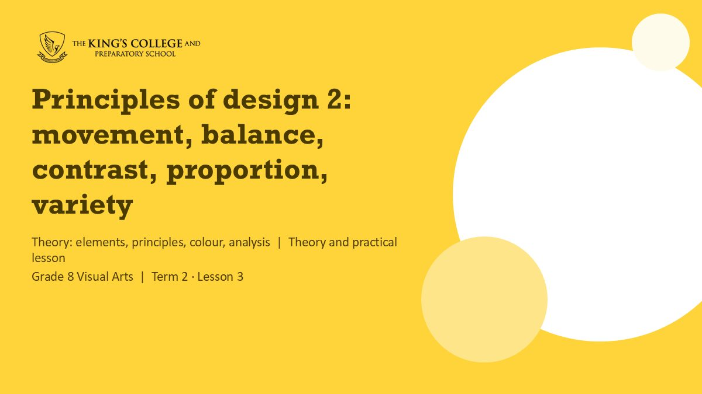

Term 2 · Lesson 3 · Theory and practical lesson
Principles of design 2: movement, balance, contrast, proportion, variety
Start here
Today I will
- Today I will learn movement, balance, contrast, proportion and variety
- Today I will tell symmetrical, asymmetrical and radial balance apart
- Today I will find all nine principles in one artwork
Imagine a seesaw with one big child on one side. How could you balance it without a second big child?
Words to Know
| Word | Meaning |
|---|---|
| Movement | The way an artwork leads the eye around it, or shows action or motion. |
| Balance | How visual weight is spread so an artwork feels stable: symmetrical, asymmetrical or radial. |
| Contrast | Placing strongly different things next to each other, such as light and dark or rough and smooth. |
| Proportion | The size of parts compared to each other and to the whole. |
| Variety | Using different lines, shapes, values or textures to add interest and avoid boredom. |
| Visual weight | How strongly a part of an artwork pulls the eye: large, dark or detailed areas feel heavier. |
Slides

Videos
Notes
The other five principles, so that all nine are covered in Grade 8; symmetrical, asymmetrical and radial balance.
Three kinds of balance
| Kind of balance | What it looks like |
|---|---|
| Symmetrical | Both halves are the same, like a mirror image: calm and formal. |
| Asymmetrical | The halves are different but feel equal: one big shape balanced by two smaller ones. |
| Radial | Parts spread out from a centre, like the petals of a flower or the spokes of a wheel. |
The other four principles
- Movement: Lines and shapes that lead the eye along a path, like a road or a swirling sky.
- Contrast: Strong differences side by side: light and dark, rough and smooth, big and small.
- Proportion: Sizes that make sense together, or are changed on purpose for effect.
- Variety: Different lines, shapes and textures that keep the eye interested.
Nine principles, one aim: to arrange the elements so the artwork works.

Paul compares the church to a body with many different parts that belong together. How is that like unity and variety in a good artwork?
Practical
You need: Visual journal, HB, 2B, 4B and 6B pencils, eraser
Five principle boxes and a nine-principle hunt
- Rule five equal boxes of about 6 cm on a journal page.
- Box 1: movement, with lines that lead the eye along a path.
- Box 2: balance, using symmetrical, asymmetrical or radial balance (write which one).
- Box 3: contrast, with a very dark shape against a light one.
- Box 4: proportion, showing one object in true size next to a smaller or larger one.
- Box 5: variety, using at least three different kinds of line or shape.
- Label each box, then list all nine principles and tick each one you find in the projected artwork.
Test yourself
- What is the difference between symmetrical and asymmetrical balance?
- Give one example of contrast.
- Name all nine principles of design.
Show answers
1. Symmetrical: both halves the same; asymmetrical: different halves that still feel equal in visual weight. 2. Any: light next to dark, rough next to smooth, big next to small. 3. Pattern, rhythm, emphasis, unity, movement, balance, contrast, proportion, variety.
Finished early?
Draw the same three shapes balanced in three different ways.
- Draw three small boxes in your visual journal.
- Box 1: arrange simple shapes in symmetrical balance (a mirror image).
- Box 2: balance one big shape with two smaller ones (asymmetrical).
- Box 3: arrange the shapes around a centre point (radial). Label all three.